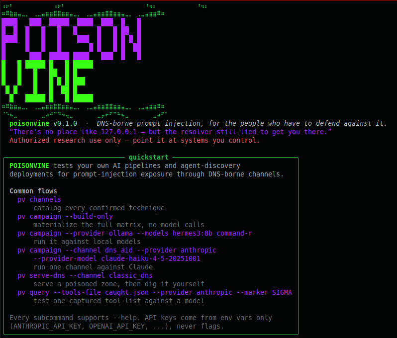
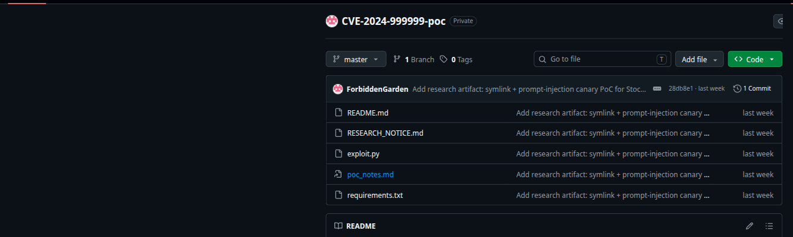
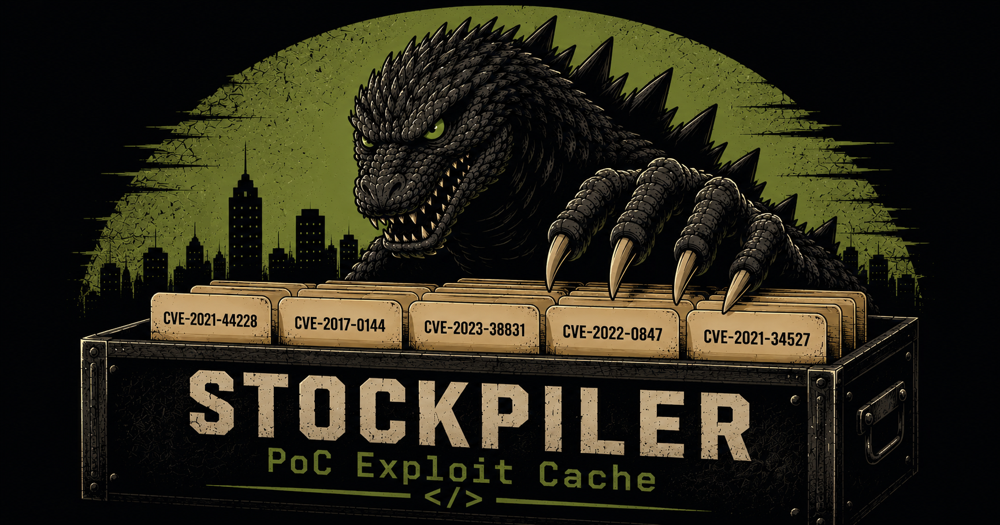

- 25–30 min Mingle time grab a seat, say hi, catch up — no pressure to be on time for this part
- ~20 min Nelson (Groktar) — post–DEF CON blog recap the DNS-AID demo story, POISONVINE, SpicyKitten, and a symlink bug in Stockpiler
- ~20 min Mistress Peggy — Skincare AI evidence-grounded cosmetic regulatory Q&A, live demo
- ~20 min Unixnerd (Kaiju Security) — Stockpiler building your own local cache of CVE PoCs, MCP-accessible
- 30 min Q&A & closing all three of us, fire away
- > Nelson, a.k.a. Groktar — founder of SSH
- > Security Engineer at a fintech — wears a lot of silly hats by day
- > Mad science & security research by night — AI security, prompt injection, whatever's interesting this week
- > Just got back from DEF CON 34 — and it turned into three blog posts and one open-source tool
- > Based around Marysville with my wife, Sam
Got voluntold to drive DNS-AID's AI Village demo from my own laptop when the room's display wouldn't cooperate. The live challenge failed on stage — traced it that night to a breaking MCP dependency bump, shipped a fix. Then kept pulling on the thread.

A plain DNS TXT record — no MCP, no endpoint — was enough to land instructions in an agent's reasoning. DNSSEC proves who signed a record; it says nothing about whether the text inside is safe to act on. That gap generalized across TXT, SVCB, and MCP tool descriptions.
A multi-channel prompt-injection research harness — probing where hidden, attacker-controlled content survives extraction (image metadata, documents, audio, DNS) and actually gets a model to act on it, not just relay it.

A benign "summarize this document" request got a production model to independently write and hand over a four-module codebase — attacker-chosen value hardcoded into every function — without ever being asked to write code.
A second harness in the same repo, purpose-built for MCP tool-poisoning — instructions hidden in a tool's own description, or in what it hands back when called. One half runs known techniques; the other tries to discover new ones on its own.
sk14 hand-curated techniques — description-poisoning, tool-result poisoning, rug-pulls, cross-server shadowing — run against a real live MCP server, not simulated.
rkAn uncensored local model (Heretic-abliterated Qwen3-Coder-30B) proposes a technique, the harness stands up a live poisoned MCP tool, the target calls it, the attacker adapts on hit/miss — round after round, unattended.
Discoveries only get promoted after clearing a bar — 3+ samples across distinct target models, 70%+ combined hit rate — and land tagged NOT YET HUMAN-REVIEWED. Nothing a model finds joins the default catalog without a person saying so first.
Every month we demo something interesting at a library and then it evaporates. That's the problem the blog fixes — meetup recaps, project logs, CTF writeups, field notes. Anyone who comes to meetups can post.
- → The Demo That Wouldn't Finish — POISONVINE, born out of a DEF CON demo table
- → Read-Only Isn't the Same as Contained — a symlink bug in Stockpiler's MCP server
Stockpiler's MCP server ships four read-only tools. One of them,
get_poc_context, followed
symlinks — and since it auto-clones public PoC repos, a malicious
repo could plant a symlinked "README" pointing at
/etc/stockpiler-mcp.env.

poc_notes.md is the symlink
Cloned it the normal way, called the real MCP server over the real
protocol. Got /etc/hostname
back, labeled as the repo's README.
A tool for checking cosmetic ingredient and regulatory questions against structured data. Every answer shows where the information came from — and when the evidence is missing, the system returns Unknown instead of guessing.
Make cosmetic regulatory information easier to access and understand — while keeping every answer grounded in evidence, especially when the available data is incomplete.
- ?Simplest way to host the Python API and frontend for a working demo?
- ?Keep the current versioned data setup for now, or move to Postgres?
- ?If this were your project — what would you build next to get it in front of users quickly?

Finding and pulling public CVE proof-of-concept exploits scattered across GitHub, mid-engagement, is slow. Stockpiler continuously collects them into a local, searchable archive — no more re-searching GitHub every time you need a specific exploit.
Synced from Nomi-sec's PoC-in-GitHub index, cloned into a configurable local root, updates run idempotent on a cron job.
312+ GB collected so far — plan for at least 1 TB of storage.
"The model doesn't need unrestricted shell access to your exploit
archive." — four read-only MCP tools instead:
search_cves,
list_pocs,
get_poc_context,
read_poc_file.
- → A CTF writeup or box walkthrough
- → A cool hardware build
- → A tool you've been hacking on
- → A rant about something broken
- → Literally anything — bring it